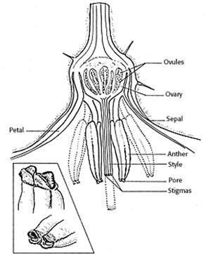
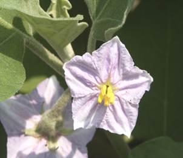
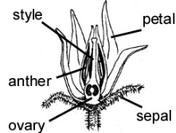
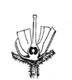
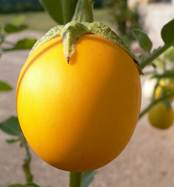
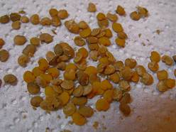

GPBR 112 :: Lecture 18 :: BRINJAL (Solanum melongena)

Brinjal is one of the most important vegetable crops grown extensively in the tropical and subtropical belts of the world. It is grown mainly fresh market and to a little extent for processing. Increased attention is now being bestowed to breeding and production of Brinjal. Production of brinjal can further be increased if improved cultural practices are combined with good quality seeds. The quality seed production techniques of brinjal comprises of the following steps.
Botany
Brinjal is often cross pollinated crop. Brinjal flower opens mainly in morning. A few flower open at 16 hr. Anther dehiscence occurs 15‑20 minutes after flowers have opened. The period of receptivity ranges from a day prior to flower opening to 4 days after opening. Brinjal produces 4 types of flowers with different style length. (Long style, short style, medium style and pseudo short style). For seed production and better yield, the long and medium style is desirable. To increase the production of long and medium style application of more nitrogen or spraying of growth regulators during pre‑flowering and flowering stages may be followed.
 
Method of seed production : Seed to Seed.
Stages of seed production
Breeder seed à Foundation Seed à Foundation Seed II à Certified Seed.
Varieties
Co.1, Co.2. MDU.1, PKM.1, KKM.1, PLR. 1. AU1, Pusa purple long, Arka nidhi, Pant smart, Arka neelkanth, Arka shrish.
Hybrids
CoBH1,Arka Navneet (IIHR 22‑1 x supreme), Pusa H‑5, Pusa H‑6, MHB 10, MHB 39 (Mahyco), Azad Hybrid.
Season
The brinjal seed production can be taken up in the following 2 seasons. May‑June and December‑ January.
Land requirement : The land should be free of volunteer plants.
Isolation
For varieties, 200 M or 100 M of isolation distance is required for foundation and certified seed, respectively. For hybrid seed production minimum of 200 M isolation distance should be maintained.
Seed rate
Varieties - 400 ‑ 500 g/ha
Hybrids - 200 g/ha (Female) - 50 g/ha (Male)
Nursery
Sow the seeds in raised nursery bed of 20 cm height, in rows of 5 cm gap and covered with sand. Eight and ten nursery beds will be sufficient to transplant one acre. Apply 2 kg of OAP 10days before pulling out of seedling.
Transplanting
Seedlings are transplanted when they are 30‑35 days old (12‑15 cm height) preferably in the evening time. Spacing of 75 x 60 cm (non spreading) and 90 x 60 cm (spreading) varieties, 90 x 60 cm for female parent and 60 x 45 cm for male parent of hybrids.
Manuring
The field should be thoroughly ploughed for fine filth and apply 25 tons of FYM/ha. The other fertilizer requirement for brinjal variety and hybrid are same as followed for tomato seed production.
Roguing
The roguing should be done based on the plant characters, leaf, branching and spreading characters and also based on fruit size, shape and color. The plants affected by Phomopsis blight, leaf spot and little leaf virus disease should be removed from the seed production field.
Pest and disease management
The pests like fruit borer, shoot borer, beetles, aphids, mealy bug and jassids can be controlled by spraying Nuvacron or Methyl parathion. The red spider mite can be controlled by spraying in Kelthane. The important diseases are damping off and little leaf which can be controlled by spraying fungicide and systemic insecticides, respectively. Powdery mildew, leaf spot and anthracnose diseases can be controlled by spraying Benlate.
Hybrid seed production
The planting ratio of female and male parents adopted for hybrid seed production is normally 5:1 or 6:1.For production of hybrid seeds, crossing programme is done using emasculation and dusting methods as followed in tomato.
 
Harvesting and processing
Harvesting is done when fruits are fully ripe (when the fruits turn into yellow colour) i.e., 405 days after flowering. The harvested fruits are to be graded for true to type and off type and fruit borer infested fruits are discarded. The graded fruits are cut in 2‑3 pieces or whole fruits will be put in a cement tank with water and crushed manually and then allow it for fermentation for 1‑2 days. Then the floating pulp portions are to be removed, the seeds settled at the bottom should be collected and washed with water and then the seeds with equal volume of water is treated with commercial Hydrochloric acid @ 3‑5 ml/kg of seed. The mixture is kept for 10‑15 minutes with frequent stirring. Then the treated seeds are to be washed with water for 3‑4 times. Afterwards seeds are dried under shade for 2‑3 days over a tarpaulin and followed by sun drying for 1‑2 days to reduce the seed moisture content to 8 per cent. Then the seeds are cleaned and graded with BSS 12 sieve. The processed seeds are treated with fungicides or Halogen mixture @ 5g/kg of seed.
 
Storage
The seeds dried to safe moisture content after treating either with captan or thiram @ 2 g/kg can be stored for 15 months in moisture vapour pervious containers, while it can be stored in moisture vapour proof containers for 30 months.
Seed Yield : 100-200 Kg/ha
Seed Certification
Number of Inspections
1. The first inspection shall be made before flowering on order to verify isolation, volunteer plants, and other relevant factors,
2. The second inspection shall be made during flowering to check isolation, off types and other relevant factors
3. The third inspection shall be made at maturity and prior to harvesting to verify true nature of plant and other relevant factors
Specific standards
Factors |
Foundation |
Certified |
Off types – Variety |
0.1% |
0.25 |
Hybrid |
0.1% |
0.05% |
Designated diseased plant |
0.1% |
0.5% |
The designated diseases in brinjal are Phomopsis blight caused by Phomopsis vexans and little leaf caused by Datura virus ‑2.
Seed standards (Variety & Hybrid)
Factors |
Foundation & Certified |
Pure seed |
98% |
Inert matter |
2% |
Other crop seed |
None |
Weed seed |
None |
Germination |
70% |
Moisture content |
8% |
For VP Container |
6% |
Genetic purity - tomato & brinjal hybrids is |
90% |
| Download this lecture as PDF here |